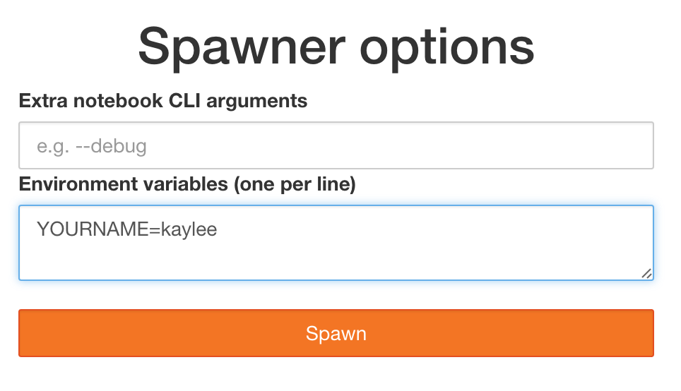

Spawners#
A Spawner starts each single-user notebook server. The Spawner represents an abstract interface to a process, and a custom Spawner needs to be able to take three actions:
start the process
poll whether the process is still running
stop the process
Examples#
Custom Spawners for JupyterHub can be found on the JupyterHub wiki. Some examples include:
DockerSpawner for spawning user servers in Docker containers
dockerspawner.DockerSpawnerfor spawning identical Docker containers for each usersdockerspawner.SystemUserSpawnerfor spawning Docker containers with an environment and home directory for each usersboth
DockerSpawnerandSystemUserSpawneralso work with Docker Swarm for launching containers on remote machines
SudoSpawner enables JupyterHub to run without being root, by spawning an intermediate process via
sudoBatchSpawner for spawning remote servers using batch systems
YarnSpawner for spawning notebook servers in YARN containers on a Hadoop cluster
SSHSpawner to spawn notebooks on a remote server using SSH
KubeSpawner to spawn notebook servers on kubernetes cluster.
Spawner control methods#
Spawner.start#
Spawner.start should start the single-user server for a single user.
Information about the user can be retrieved from self.user,
an object encapsulating the user’s name, authentication, and server info.
The return value of Spawner.start should be the (ip, port) of the running server,
or a full URL as a string.
Most Spawner.start functions will look similar to this example:
async def start(self):
self.ip = '127.0.0.1'
self.port = random_port()
# get environment variables,
# several of which are required for configuring the single-user server
env = self.get_env()
cmd = []
# get jupyterhub command to run,
# typically ['jupyterhub-singleuser']
cmd.extend(self.cmd)
cmd.extend(self.get_args())
await self._actually_start_server_somehow(cmd, env)
# url may not match self.ip:self.port, but it could!
url = self._get_connectable_url()
return url
When Spawner.start returns, the single-user server process should actually be running,
not just requested. JupyterHub can handle Spawner.start being very slow
(such as PBS-style batch queues, or instantiating whole AWS instances)
via relaxing the Spawner.start_timeout config value.
Note on IPs and ports#
Spawner.ip and Spawner.port attributes set the bind url,
which the single-user server should listen on
(passed to the single-user process via the JUPYTERHUB_SERVICE_URL environment variable).
The return value is the ip and port (or full url) the Hub should connect to.
These are not necessarily the same, and usually won’t be in any Spawner that works with remote resources or containers.
The default for Spawner.ip, and Spawner.port is 127.0.0.1:{random},
which is appropriate for Spawners that launch local processes,
where everything is on localhost and each server needs its own port.
For remote or container Spawners, it will often make sense to use a different value,
such as ip = '0.0.0.0' and a fixed port, e.g. 8888.
The defaults can be changed in the class,
preserving configuration with traitlets:
from traitlets import default
from jupyterhub.spawner import Spawner
class MySpawner(Spawner):
@default("ip")
def _default_ip(self):
return '0.0.0.0'
@default("port")
def _default_port(self):
return 8888
async def start(self):
env = self.get_env()
cmd = []
# get jupyterhub command to run,
# typically ['jupyterhub-singleuser']
cmd.extend(self.cmd)
cmd.extend(self.get_args())
remote_server_info = await self._actually_start_server_somehow(cmd, env)
url = self.get_public_url_from(remote_server_info)
return url
Exception handling#
When Spawner.start raises an Exception, a message can be passed on to the user via the exception via a .jupyterhub_html_message or .jupyterhub_message attribute.
When the Exception has a .jupyterhub_html_message attribute, it will be rendered as HTML to the user.
Alternatively .jupyterhub_message is rendered as unformatted text.
If both attributes are not present, the Exception will be shown to the user as unformatted text.
Spawner.poll#
Spawner.poll should check if the spawner is still running.
It should return None if it is still running,
and an integer exit status, otherwise.
For the local process case, Spawner.poll uses os.kill(PID, 0)
to check if the local process is still running. On Windows, it uses psutil.pid_exists.
Spawner.stop#
Spawner.stop should stop the process. It must be a tornado coroutine, which should return when the process has finished exiting.
Spawner state#
JupyterHub should be able to stop and restart without tearing down single-user notebook servers. To do this task, a Spawner may need to persist some information that can be restored later. A JSON-able dictionary of state can be used to store persisted information.
Unlike start, stop, and poll methods, the state methods must not be coroutines.
For the single-process case, the Spawner state is only the process ID of the server:
def get_state(self):
"""get the current state"""
state = super().get_state()
if self.pid:
state['pid'] = self.pid
return state
def load_state(self, state):
"""load state from the database"""
super().load_state(state)
if 'pid' in state:
self.pid = state['pid']
def clear_state(self):
"""clear any state (called after shutdown)"""
super().clear_state()
self.pid = 0
Spawner options form#
(new in 0.4)
Some deployments may want to offer options to users to influence how their servers are started. This may include cluster-based deployments, where users specify what resources should be available, or docker-based deployments where users can select from a list of base images.
This feature is enabled by setting Spawner.options_form, which is an HTML form snippet
inserted unmodified into the spawn form.
If the Spawner.options_form is defined, when a user tries to start their server, they will be directed to a form page, like this:

If Spawner.options_form is undefined, the user’s server is spawned directly, and no spawn page is rendered.
See this example for a form that allows custom CLI args for the local spawner.
Spawner.options_from_form#
Options from this form will always be a dictionary of lists of strings, e.g.:
{
'integer': ['5'],
'text': ['some text'],
'select': ['a', 'b'],
}
When formdata arrives, it is passed through Spawner.options_from_form(formdata),
which is a method to turn the form data into the correct structure.
This method must return a dictionary, and is meant to interpret the lists-of-strings into the correct types. For example, the options_from_form for the above form would look like:
def options_from_form(self, formdata):
options = {}
options['integer'] = int(formdata['integer'][0]) # single integer value
options['text'] = formdata['text'][0] # single string value
options['select'] = formdata['select'] # list already correct
options['notinform'] = 'extra info' # not in the form at all
return options
which would return:
{
'integer': 5,
'text': 'some text',
'select': ['a', 'b'],
'notinform': 'extra info',
}
When Spawner.start is called, this dictionary is accessible as self.user_options.
Writing a custom spawner#
If you are interested in building a custom spawner, you can read this tutorial.
Registering custom Spawners via entry points#
As of JupyterHub 1.0, custom Spawners can register themselves via
the jupyterhub.spawners entry point metadata.
To do this, in your setup.py add:
setup(
...
entry_points={
'jupyterhub.spawners': [
'myservice = mypackage:MySpawner',
],
},
)
If you have added this metadata to your package, users can select your spawner with the configuration:
c.JupyterHub.spawner_class = 'myservice'
instead of the full
c.JupyterHub.spawner_class = 'mypackage:MySpawner'
previously required.
Additionally, configurable attributes for your spawner will
appear in jupyterhub help output and auto-generated configuration files
via jupyterhub --generate-config.
Environment variables and command-line arguments#
Spawners mainly do one thing: launch a command in an environment.
The command-line is constructed from user configuration:
Spawner.cmd (default:
['jupterhub-singleuser'])Spawner.args (cli args to pass to the cmd, default: empty)
where the configuration:
c.Spawner.cmd = ["my-singleuser-wrapper"]
c.Spawner.args = ["--debug", "--flag"]
would result in spawning the command:
my-singleuser-wrapper --debug --flag
The Spawner.get_args() method is how Spawner.args is accessed,
and can be used by Spawners to customize/extend user-provided arguments.
Prior to 2.0, JupyterHub unconditionally added certain options if specified to the command-line,
such as --ip={Spawner.ip} and --port={Spawner.port}.
These have now all been moved to environment variables,
and from JupyterHub 2.0,
the command-line launched by JupyterHub is fully specified by overridable configuration Spawner.cmd + Spawner.args.
Most process configuration is passed via environment variables.
Additional variables can be specified via the Spawner.environment configuration.
The process environment is returned by Spawner.get_env, which specifies the following environment variables:
JUPYTERHUBSERVICE_URL - the _bind url where the server should launch its http server (
http://127.0.0.1:12345). This includes Spawner.ip and Spawner.port; new in 2.0, prior to 2.0 ip,port were on the command-line and only if specifiedJUPYTERHUB_SERVICE_PREFIX - the URL prefix the service will run on (e.g.
/user/name/)JUPYTERHUB_USER - the JupyterHub user’s username
JUPYTERHUB_SERVER_NAME - the server’s name, if using named servers (default server has an empty name)
JUPYTERHUB_API_URL - the full url for the JupyterHub API (http://17.0.0.1:8001/hub/api)
JUPYTERHUB_BASE_URL - the base url of the whole jupyterhub deployment, i.e. the bit before
hub/oruser/, as set by c.JupyterHub.base_url (default:/)JUPYTERHUB_API_TOKEN - the API token the server can use to make requests to the Hub. This is also the OAuth client secret.
JUPYTERHUB_CLIENT_ID - the OAuth client ID for authenticating visitors.
JUPYTERHUB_OAUTH_CALLBACK_URL - the callback URL to use in oauth, typically
/user/:name/oauth_callbackJUPYTERHUB_OAUTH_ACCESS_SCOPES - the scopes required to access the server (called JUPYTERHUB_OAUTH_SCOPES prior to 3.0)
JUPYTERHUB_OAUTH_CLIENT_ALLOWED_SCOPES - the scopes the service is allowed to request. If no scopes are requested explicitly, these scopes will be requested.
Optional environment variables, depending on configuration:
JUPYTERHUBSSL[KEYFILE|CERTFILE|CLIENT_CI] - SSL configuration, when internal_ssl is enabled
JUPYTERHUB_ROOT_DIR - the root directory of the server (notebook directory), when Spawner.notebook_dir is defined (new in 2.0)
JUPYTERHUB_DEFAULT_URL - the default URL for the server (for redirects from /user/:name/), if Spawner.default_url is defined (new in 2.0, previously passed via cli)
JUPYTERHUB_DEBUG=1 - generic debug flag, sets maximum log level when Spawner.debug is True (new in 2.0, previously passed via cli)
JUPYTERHUB_DISABLE_USER_CONFIG=1 - disable loading user config, sets maximum log level when Spawner.debug is True (new in 2.0, previously passed via cli)
JUPYTERHUB*[MEM|CPU]*[LIMIT_GUARANTEE] - the values of cpu and memory limits and guarantees. These are not expected to be enforced by the process, but are made available as a hint, e.g. for resource monitoring extensions.
Spawners, resource limits, and guarantees (Optional)#
Some spawners of the single-user notebook servers allow setting limits or
guarantees on resources, such as CPU and memory. To provide a consistent
experience for sysadmins and users, we provide a standard way to set and
discover these resource limits and guarantees, such as for memory and CPU.
For the limits and guarantees to be useful, the spawner must implement
support for them. For example, LocalProcessSpawner, the default
spawner, does not support limits and guarantees. One of the spawners
that supports limits and guarantees is the systemdspawner.
Memory Limits & Guarantees#
c.Spawner.mem_limit: A limit specifies the maximum amount of memory
that may be allocated, though there is no promise that the maximum amount will
be available. In supported spawners, you can set c.Spawner.mem_limit to
limit the total amount of memory that a single-user notebook server can
allocate. Attempting to use more memory than this limit will cause errors. The
single-user notebook server can discover its own memory limit by looking at
the environment variable MEM_LIMIT, which is specified in absolute bytes.
c.Spawner.mem_guarantee: Sometimes, a guarantee of a minimum amount of
memory is desirable. In this case, you can set c.Spawner.mem_guarantee to
to provide a guarantee that at minimum this much memory will always be
available for the single-user notebook server to use. The environment variable
MEM_GUARANTEE will also be set in the single-user notebook server.
The spawner’s underlying system or cluster is responsible for enforcing these
limits and providing these guarantees. If these values are set to None, no
limits or guarantees are provided, and no environment values are set.
CPU Limits & Guarantees#
c.Spawner.cpu_limit: In supported spawners, you can set
c.Spawner.cpu_limit to limit the total number of cpu-cores that a
single-user notebook server can use. These can be fractional - 0.5 means 50%
of one CPU core, 4.0 is 4 cpu-cores, etc. This value is also set in the
single-user notebook server’s environment variable CPU_LIMIT. The limit does
not claim that you will be able to use all the CPU up to your limit as other
higher priority applications might be taking up CPU.
c.Spawner.cpu_guarantee: You can set c.Spawner.cpu_guarantee to provide a
guarantee for CPU usage. The environment variable CPU_GUARANTEE will be set
in the single-user notebook server when a guarantee is being provided.
The spawner’s underlying system or cluster is responsible for enforcing these
limits and providing these guarantees. If these values are set to None, no
limits or guarantees are provided, and no environment values are set.
Encryption#
Communication between the Proxy, Hub, and Notebook can be secured by
turning on internal_ssl in jupyterhub_config.py. For a custom spawner to
utilize these certs, there are two methods of interest on the base Spawner
class: .create_certs and .move_certs.
The first method, .create_certs will sign a key-cert pair using an internally
trusted authority for notebooks. During this process, .create_certs can
apply ip and dns name information to the cert via an alt_names kwarg.
This is used for certificate authentication (verification). Without proper
verification, the Notebook will be unable to communicate with the Hub and
vice versa when internal_ssl is enabled. For example, given a deployment
using the DockerSpawner which will start containers with ips from the
docker subnet pool, the DockerSpawner would need to instead choose a
container ip prior to starting and pass that to .create_certs (TODO: edit).
In general though, this method will not need to be changed and the default
ip/dns (localhost) info will suffice.
When .create_certs is run, it will .create_certs in a default, central
location specified by c.JupyterHub.internal_certs_location. For Spawners
that need access to these certs elsewhere (i.e. on another host altogether),
the .move_certs method can be overridden to move the certs appropriately.
Again, using DockerSpawner as an example, this would entail moving certs
to a directory that will get mounted into the container this spawner starts.